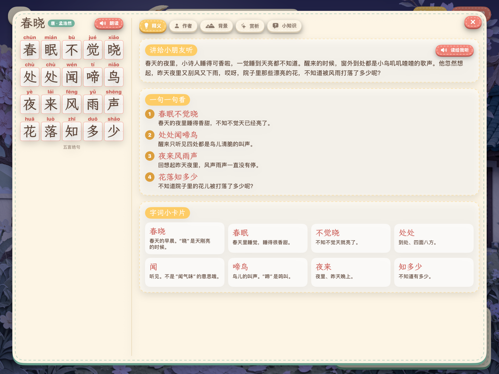

诗画卷 · iPad · recorded on iPad Pro 13" simulator, no editing.
0:00 – 0:20 《春晓》 — tap the window (shutters open), tap the child (the child walks to the
blossoms), tap the puddle (splash), select a poem line (the branch shakes, petals fall; then the
sleeping birds wake), then switch rain-night → dawn.
0:20 – 0:33 《静夜思》 — tap the moon (the poet looks up, the moonlight brightens on the ground),
tap the poet, select lines (frost sparkles, head lifts / lowers).
0:33 – 0:49 《江雪》 — tap the boat (it rocks), select lines (birds fly off, the snow slides,
the fisherman starts fishing).
0:49 – 0:53 — the per-poem reading panel: pinyin for every character, line-by-line meaning,
author, background, appreciation, notes, word cards.

The reading panel (「诗解」) for 《春晓》.
Public-domain poems; pinyin, translations, notes and artwork produced for this app.